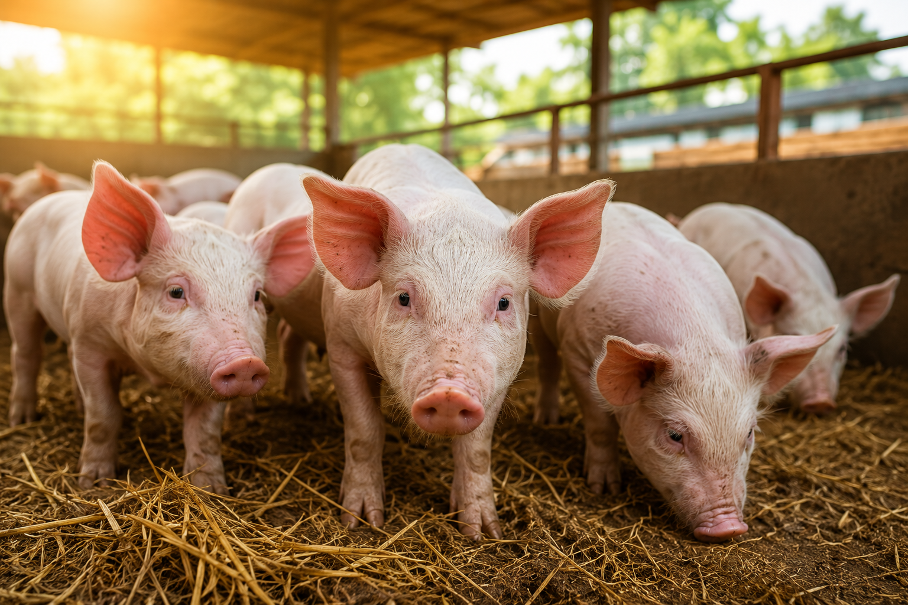

African Swine Fever Is Killing Pigs. Here's How Farmers Can Protect Their Farms

Imagine waking up one morning and finding several of your pigs dead.
Then another.
Then another.
For a pig farmer, this isn't just a bad day. It can wipe out years of investment in a matter of days.
That is the kind of damage African Swine Fever, commonly called ASF, can cause.
ASF is a highly contagious viral disease that affects domestic and wild pigs. In severe outbreaks, mortality can reach 100%. The good news for humans is that ASF does not infect people. The bad news for pig farmers is that once the virus enters a herd, things can get ugly very quickly.
And this is why farmers shouldn't wait until pigs start dying before thinking about biosecurity.
How Does ASF Enter a Farm?
This is where things get interesting.
The virus doesn't need a pig to walk directly into your farm.
It can hitch a ride on contaminated boots, clothes, vehicles, equipment and other materials. It can also spread through infected pigs, pork products and contaminated feed or food waste.
In other words, that visitor who just came from another pig farm?
Potential problem.
That truck that transported pigs somewhere else yesterday?
Potential problem.
Those kitchen leftovers containing pork that someone wants to feed the pigs?
Big problem.
The virus is also remarkably persistent in the environment, which means ordinary "I swept the place this morning" farm hygiene isn't enough.
The First Rule: Don't Turn Your Farm Into a Bus Stop
One of the easiest ways to reduce the risk is to control who and what enters the farm.
Visitors should be limited to people who actually need to be there. Workers should ideally have dedicated farm clothing and footwear, while boots, equipment and vehicles should be properly cleaned and disinfected.
Because if someone walks into an infected farm and then walks into yours, your pigs don't know that person came with bad news.
They just see a human being.
That's why farm biosecurity has to assume that people and equipment can accidentally transport disease.
Stop Buying Pigs from "My Guy Has Pigs"
We know how these things work.
"Boss, I get some fine pigs for you."
"Where are they from?"
"Don't worry, na healthy pigs."
For ASF prevention, "don't worry" is not a biosecurity strategy.
Farmers should source animals from reliable suppliers and have proper health checks. New pigs should be separated from the existing herd for an appropriate quarantine period and monitored before they are introduced.
Mixing animals from multiple unknown sources is an unnecessary gamble.
⚠️ That leftover pork may look like free feed.
It could become an expensive meal.
And Please, Stop Feeding Pigs Untreated Food Waste
This deserves its own paragraph because it is one of those things that sounds harmless until it isn't.
Feeding pigs untreated kitchen scraps or swill containing meat or pork products can introduce ASF into a herd. WOAH specifically recommends that farmers do not feed pigs untreated swill or kitchen scraps containing meat.
Watch Your Pigs
Farmers need to know what is normal for their animals so they can recognise when something changes.
Sudden deaths, unusual illness, weakness, fever, skin discolouration, vomiting, diarrhoea or bleeding can be signs of serious disease, although these symptoms alone cannot confirm ASF.
If something looks wrong, don't start guessing.
- Don't move the sick pigs to another farm.
- Don't sell them.
- Don't slaughter and distribute them.
- Don't wait for WhatsApp University to diagnose the problem.
Contact a veterinarian or the appropriate Veterinary Authority and have the disease properly investigated. ASF requires laboratory confirmation because other pig diseases can look similar.
Markets Need Biosecurity Too
Here's where the conversation becomes bigger than individual farms.
A farmer can have excellent biosecurity at home and still be exposed to disease through a poorly managed livestock market.
Think about a market where pigs from different farms arrive, trucks come and go, traders move between locations, equipment is shared and animals are mixed.
That's basically a networking event for viruses.
This is why biosecurity shouldn't stop at the farm gate. It needs to extend through animal markets, transportation, slaughter facilities and the wider livestock value chain. WOAH emphasises biosecurity throughout the production and movement system, alongside surveillance and rapid reporting.
Technology Can Help Too
This is one reason livestock traceability matters.
Imagine every animal entering a commercial livestock facility having a digital record showing where it came from, where it has travelled, its health information and where it eventually went.
If a disease is detected, authorities and farmers have a much better chance of identifying where that animal came from and which other animals may have been exposed.
Instead of asking:
"Where did this pig come from?"
you can actually check the record.
That is the direction modern livestock systems are moving towards: identification, traceability, surveillance and stronger biosecurity working together.
The Uncomfortable Truth
There is no magic medicine that allows a farmer to simply treat an ASF outbreak and carry on as normal.
Prevention is still the main defence.
WOAH describes biosecurity as the most important and effective measure available for preventing and controlling ASF. Countries and livestock industries are also continuing to work on vaccine research and vaccination strategies, but farmers should not treat vaccination as a substitute for proper biosecurity.
So, before the next pig enters your farm, ask yourself:
- Where did it come from?
- Who handled it?
- What other farms has it visited?
- Has it been properly checked?
- Are my workers and visitors carrying dedicated clothing and footwear?
- Are my vehicles and equipment being disinfected?
- What happens when a pig becomes sick?
And perhaps the biggest question:
If disease enters this farm tomorrow, how quickly will I know?
Because with ASF, prevention isn't being paranoid.
It's protecting your animals, your investment and your livelihood.
A healthy pig farm isn't just about feeding pigs well.
It's about making sure disease doesn't get an invitation in the first place.